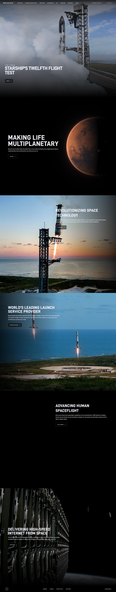

SpaceX 主题
SpaceX 的 Design.md 主题展示，围绕媒体内容、编辑/机构、品牌展示、高级质感组织页面。
Space technology. Stark black and white, full-bleed imagery, futuristic.
媒体内容编辑/机构品牌展示高级质感内容出版排版系统品牌叙事

来源
- 来源
- getdesign.md
- 镜像
- github:VoltAgent/awesome-design-md
- 网站
- https://spacex.com/
- 详情
- https://getdesign.md/spacex/design-md
色板
#000000: #000000#ffffff: #ffffff#f0f0fa: #f0f0fa#0a0a0a: #0a0a0a#3a3a3f: #3a3a3f#e0e0e8: #e0e0e8#0000ee: #0000ee#5a5a5f: #5a5a5f#a0a0a0: #a0a0a0#fbbf24: #fbbf24#8a8a8a: #8a8a8a#e0e0e0: #e0e0e0
字体
display: D-DIN-Boldbody: D-DINmono: ui-monospacehints: D-DIN-Bold,D-DIN,ui-monospace,Arial Narrow,Verdana,Inter
圆角
control: 4pxcard: 4pxpreview: 4pxpill: 32pxsource: design-md
间距
xxs: 4pxxs: 8pxsm: 12pxmd: 16pxlg: 18pxxl: 24pxxxl: 32pxhuge: 48pxsource: design-md
使用建议
建议
- 建议：Use full-bleed photography or autoplaying video as the dominant decorative element on every marketing band。
- 建议：Render display tiers in uppercase D-DIN-Bold with positive 0.96–1.6px letter-spacing — the wide tracking is the signature。
- 建议：Use a single {button-ghost-on-dark} per band — the brand does NOT show two CTAs side by side on marketing surfaces。
- 建议：Pair every photograph with type that respects the imagery — no scrims, no gradients, no overlays. Grade the photo, not the canvas。
- 建议：Keep nav overlay-style (transparent, white-on-image) on marketing pages。
避免
- 避免：introduce brand accent colors — black, white, and photography are the entire palette。
- 避免：use drop shadows or gradient overlays on dark canvas — they fight the photography。
- 避免：render display tiers in sentence-case or title-case — uppercase is the brand。
- 避免：put filled buttons on marketing surfaces — the ghost outlined pill is the only marketing CTA。
- 避免：use serif or humanist sans alternatives — the condensed industrial DIN cut is non-negotiable。
查看 DESIGN.md